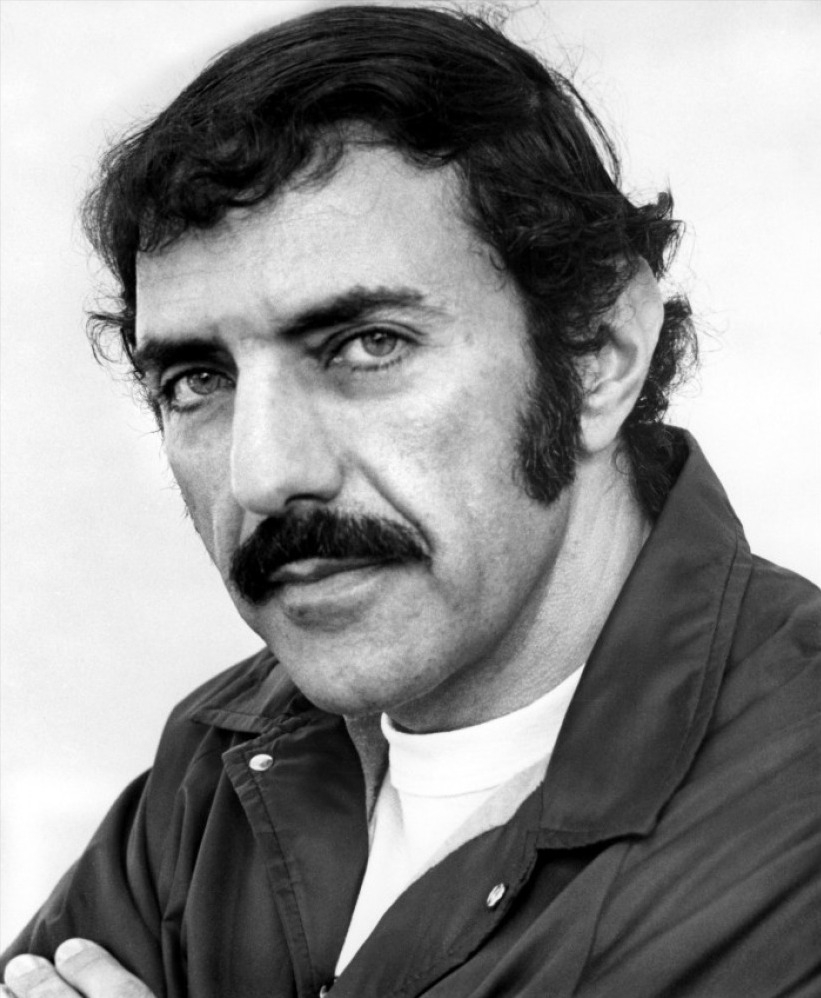

The Exorcist is a 1971 novel by William Peter Blatty. The book details the demonic possession of twelve-year-old Regan MacNeil, the daughter of a famous actress, and the Jesuit psychiatrist priest who attempts to exorcise the demon. The novel was inspired by a 1949 case of demonic possession and exorcism that Blatty heard about while he was a student in the class of 1950 at Georgetown University. The Exorcist is one of the most controversial novels ever written, and went on to become a literary phenomenon.” Usually I would make some half-assed joke about something or other, but in the case of this book, this was actually a terrifying read. One of my favorite topics to read about is good vs. evil and/or God vs. Satan - I’ve always found it interesting. I grew up going to church and did my best to be a good Christian (until art school and life happened) but even when I was a good Christian girl I was always fascinated by the other side of the coin. You can’t have light without darkness, you can’t have good without bad, you can’t have a loving God without a hateful Devil. When it comes to horror books (or movies), I will read (or watch) most any, but the ones that really stick with me and really cut through my bones and give me chills are books like The Exorcist.
What I liked a lot about the book is that it really pushed the envelope. If this book had been released in 2014 people would be still be shocked by the profane language and how raw this books is… so it absolutely floors me that this book was released in 1971 - I can only imagine what people thought of a 12 year old saying the things she said. This book starts off with us learning about Chris MacNeil (a well-known actress) and her daughter Regan (or Rags) MacNeil. Regan seems like a normal 12-year old girl - happy and playful and loving. So where do things take a turn for the worst? Honestly, I think it’s when Regan is playing with the stupid Ouija board and her mom is all like “well that’s fun keep playing with the Ouija board and your imaginary friend Captain Howdy (who ends up being a demon mind you) cause that’s totally normal!” Fuck that. If I had a child, and they came up to me and informed me that they have been playing with an Ouija board and had made a new friend named Captain Howdy, shit would get real. We now know that 1. Ouija boards are evil and 2. Never trust an imaginary friend named Captain Howdy.


As the book progresses we find out that something seems to be off with Regan. The first indication being when she is at a doctor’s appointment (her mom wants to see if there is something wrong with her because she just hasn’t been herself lately - yeah next time don’t let your kid play with someone named Captain Howdy) and the doctor informs her mom Chris that Regan had said to him, “She advised me to keep my goddamn fingers away from her cunt.” WHOA. Listen Regan, you are 12… you aren’t even supposed to know what that is. No joke, the book mentions the word “cunt” at least 20 times. I don’t know how they got away with that in 1971 because in 2014 someone will smack the shit out of you if you say that to them. After that incident with the doctor, everything goes down hill. Regan at one point is on her bed screaming and the bed is levitating and the doctors are in the room and their diagnose you ask? Oh, she has hysteria. What makes this book so great is reading about how the doctors absolutely 150% believe Regan is suffering from some physical and mental disease. At one point two doctors did kind of say, “Yo… this might be more than just medical.” They even hinted at some form of possession… but even then they just kind of laughed it off. Oh doctors, sometimes you just have to learn that not everything can be explained!
Then there is a mysterious death of Chris’ director, Burke Dennings (who I always picture as Burt Reynolds for some reason). He seemed to accidentally fall down the stairs located next to the MacNeil residence and twist his entire head around (he was actually pushed out of Regan’s window). How bizarre. Who could ever do something like that and have such super human strength!? Oh, a demon… yup a demon will do that.. THEN! We meet our hero, the tortured Jesuit, Karras. Oh, Karras. You tried, you really really tried to convince yourself that due to your failing faith in God that there was no way a demon could possess a 12-year old. Well that demon showed you who was boss. I mean Karras tried EVERYTHING to convince himself and the reader that there was NO WAY Regan could be possessed. Her bed is floating on her own - totally explainable with science. She speaks in 3 different voices as well as languages and changes her facial features and can speak perfect English backwards - totally explainable with science. She can tell you deep dark secrets of your past without ever having met you - totally explainable with science. After some time though, Karras is pretty much like fuck this noise it must be a demon. With the help of an older and wiser priest, Merrin, the two of them decide to perform an exorcism (with the Church’s blessing of course).

As with all exorcism’s shit hits the fan (or vomit hits people in the face), and the result is Merrin dying of heart failure and Karras asking the demon to pick on someone his own size, resulting in Karras being possessed and throwing himself out of Regan’s window (yes the same one Denning’s went out of) and dying. But hey, it’s okay cause Regan isn’t possessed anymore and no one knows where the fuck this demon is now. Yay!! All is well in the world, I guess?
William Peter Blatty, American author (born Jan. 7, 1928, New York, N.Y.—died Jan. 12, 2017, Bethesda, Md.), wrote the classic horror novel The Exorcist (1971) and produced and wrote the phenomenally successful 1973 film version, the screenplay for which Blatty won an Academy Award. The book, a tale of demonic possession, remained on best-seller lists for some 55 weeks and sold 13 million copies, while the film was frequently described as the most-frightening horror movie of all time and was placed (2010) on the National Film Registry. Prior to the publication of The Exorcist, Blatty was known as a comedy writer. His first book, Which Way to Mecca, Jack? (1960), was based on his experience (1955–57) working for the U.S. Information Agency in Beirut.
